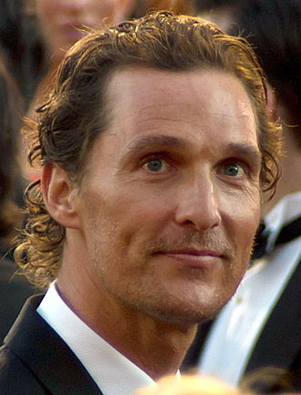
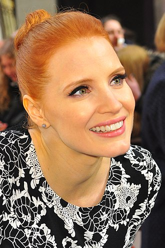
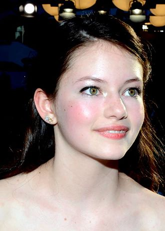

Plot
In 2067, crop blights and dust storms threaten humanity's survival. Corn is the last viable crop. The world also regresses into a post-truth society where younger generations are taught false history, including the faking of the Apollo moon missions.
Widowed engineer and former NASA pilot Joseph Cooper is now a farmer. Living with him are his father-in-law, Donald; his 15-year-old son, Tom Cooper, and 10-year-old daughter, Murphy "Murph" Cooper.
After a dust storm, strange dust patterns inexplicably appear on Murphy's bedroom floor; she attributes the anomaly to a ghost. Cooper eventually deduces the patterns were caused by gravity variations and that they represent geographic coordinates in binary code. Cooper follows the coordinates to a secret NASA facility headed by Professor John Brand, Cooper's former supervisor. Professor Brand says gravitational anomalies have happened elsewhere.
Forty-eight years earlier, unknown beings positioned a wormhole near Saturn, opening a path to a distant galaxy with twelve potentially habitable worlds located near a black hole named Gargantua. Twelve volunteers traveled through the wormhole to individually survey the planets. Astronauts Miller, Edmunds, and Mann reported positive results. Based on their data, Professor Brand conceived two plans to ensure humanity's survival. Plan A involves developing a gravitational propulsion theory to propel colonies into space, while Plan B involves launching the Endurance spacecraft carrying 5,000 frozen human embryos to colonize a habitable planet.
Movie Info
Interstellar
is a 2014 epic science fiction film directed, co-written and produced by Christopher Nolan. It stars Matthew McConaughey, Anne Hathaway, Jessica Chastain, Bill Irwin, Ellen Burstyn, John Lithgow, Matt Damon, and Michael Caine. Set in a dystopian future where humanity is struggling to survive, the film follows a group of astronauts who travel through a wormhole near Saturn in search of a new home for mankind.
Brothers Christopher and Jonathan Nolan wrote the screenplay, which had its origins in a script Jonathan developed in 2007. Christopher produced Interstellar with his wife, Emma Thomas, through their production company Syncopy, and with Lynda Obst through Lynda Obst Productions. Caltech theoretical physicist and Nobel Prize Laureate in Physics (2017) Kip Thorne was an executive producer, acted as scientific consultant, and wrote a tie-in book, The Science of Interstellar. Paramount Pictures, Warner Bros., and Legendary Pictures co-financed the film. Cinematographer Hoyte van Hoytema shot it on 35 mm in the Panavision anamorphic format and IMAX 70 mm. Principal photography began in late 2013 and took place in Alberta (Canada), Iceland and Los Angeles. Interstellar uses extensive practical and miniature effects and the company Double Negative created additional digital effects.
Interstellar premiered on October 26, 2014, in Los Angeles, California. In the United States, it was first released on film stock, expanding to venues using digital projectors. The film had a worldwide gross of over $677 million (and $696 million with subsequent re-releases), making it the tenth-highest-grossing film of 2014. Interstellar received positive reviews for its screenplay, direction, themes, visual effects, musical score, emotional depth, acting, and ambition. At the 87th Academy Awards, the film won the Academy Award for Best Visual Effects, and was nominated for Best Original Score, Best Sound Mixing, Best Sound Editing and Best Production Design.
Plot
In 2067, crop blights and dust storms threaten humanity's survival. Corn is the last viable crop. The world also regresses into a post-truth society where younger generations are taught false history, including the faking of the Apollo moon missions. Widowed engineer and former NASA pilot Joseph Cooper is now a farmer. Living with him are his father-in-law, Donald; his 15-year-old son, Tom Cooper, and 10-year-old daughter, Murphy "Murph" Cooper. After a dust storm, strange dust patterns inexplicably appear on Murphy's bedroom floor; she attributes the anomaly to a ghost. Cooper eventually deduces the patterns were caused by gravity variations and that they represent geographic coordinates in binary code. Cooper follows the coordinates to a secret NASA facility headed by Professor John Brand, Cooper's former supervisor. Professor Brand says gravitational anomalies have happened elsewhere. Forty-eight years earlier, unknown beings positioned a wormhole near Saturn, opening a path to a distant galaxy with twelve potentially habitable worlds located near a black hole named Gargantua. Twelve volunteers traveled through the wormhole to individually survey the planets. Astronauts Miller, Edmunds, and Mann reported positive results. Based on their data, Professor Brand conceived two plans to ensure humanity's survival. Plan A involves developing a gravitational propulsion theory to propel colonies into space, while Plan B involves launching the Endurance spacecraft carrying 5,000 frozen human embryos to colonize a habitable planet.
Cooper is recruited to pilot the Endurance. The crew includes scientists Dr. Amelia Brand (Professor Brand's daughter), Dr. Romilly, Dr. Doyle, and robots TARS and CASE. Before leaving, Cooper gives a distraught Murphy his wristwatch to compare their relative time for when he returns. After traversing the wormhole, Romilly studies the black hole while Cooper, Doyle, and Brand descend in a landing craft to investigate Miller's planet, an ocean world. After finding wreckage from Miller's ship, a gigantic tidal wave kills Doyle and delays the lander's departure. Due to the proximity of the black hole, time is severely dilated: as a result, 23 years have elapsed for Romilly on Endurance by the time Cooper and Brand return.
Edmunds' planet has slightly better telemetry, while Mann broadcasts positive data. Cooper decides to use their remaining fuel to reach Mann's planet, where they revive him from cryostasis. Meanwhile, Murph, now a scientist working with NASA, transmits a message announcing Professor Brand has died. She has learned that Plan A, which required unattainable data from within a black hole, was never viable. Plan B was always Professor Brand's only option. Murphy accuses Brand and Cooper of knowing that those left on Earth were doomed. Cooper subsequently declares that he will be returning to Earth while Brand and Romilly will remain on Mann's planet for permanent habitation as the planet is believed to be habitable. Cooper goes with Mann to explore and inspect the planet. Mann reveals to Cooper that the frozen planet is uninhabitable as he had sent falsified data in order to be rescued; Mann attempts to kill Cooper so that he can take the Endurance to "complete the mission" by going to Edmunds' planet. He then takes a lander and heads for Endurance. Meanwhile, Romilly is killed by a booby trap left by Mann. Brand and Cooper race to the Endurance in another lander. Mann dies during a failed manual docking operation, severely damaging Endurance. After a difficult docking maneuver, Cooper regains control of the damaged but functional Endurance.
With insufficient fuel to reach Edmunds' planet, they use a slingshot maneuver so close to Gargantua that time dilation adds another 51 years. In the process, Cooper and TARS jettison themselves to shed weight and propel Endurance using Newton's third law to ensure Endurance reaches Edmunds' planet. Slipping through the event horizon of Gargantua, they eject from their respective craft and find themselves inside a massive tesseract, constructed by future humans. Across different time periods, Cooper can see through the bookcases of Murphy's old room on Earth and weakly interact with its gravity. Cooper realizes he was Murphy's "ghost" and manipulates the second hand of the wristwatch he gave her, using Morse code to transmit the quantum data that TARS collected from inside the event horizon. Cooper and TARS are ejected from the tesseract. Cooper is picked up and awakens on a space habitat orbiting Saturn, where he reunites with an elderly Murphy. Using the quantum data sent by Cooper, the younger Murphy had solved the gravitational propulsion theory for Plan A, enabling humanity's exodus and survival. Nearing death and with her own family, Murphy urges Cooper to return to Amelia, telling him that "no parent should have to watch their own child die." Cooper and TARS take a spacecraft to rejoin Amelia and CASE on Edmunds' habitable planet.
Scientific accuracy
Regarding the concepts of wormholes and black holes, Kip Thorne stated that he "worked on the equations that would enable tracing of light rays as they traveled through a wormhole or around a black hole—so what you see is based on Einstein's general relativity equations." Early in the process, Thorne laid down two guidelines: "First, that nothing would violate established physical laws. Second, that all the wild speculations ... would spring from science and not from the fertile mind of a screenwriter." Nolan accepted these terms as long as they did not get in the way of making the film. At one point, Thorne spent two weeks trying to talk Nolan out of an idea about a character traveling faster than light before Nolan finally gave up. According to Thorne, the element which has the highest degree of artistic freedom is the clouds of ice on one of the planets they visit, which are structures that would go beyond the material strength that ice could support.
Astrobiologist David Grinspoon criticized the dire "blight" situation on Earth portrayed in the early scenes, pointing out that even with a voracious blight it would have taken millions of years to reduce the atmosphere's oxygen content. He also notes that gravity should have pulled down the ice clouds. Neil deGrasse Tyson, an astrophysicist, explored the science behind the ending of Interstellar, concluding that it is theoretically possible to interact with the past, and that "we don't really know what's in a black hole, so take it and run with it." Theoretical physicist Michio Kaku praised the film for its scientific accuracy and has said Interstellar "could set the gold standard for science fiction movies for years to come." Similarly, Timothy Reyes, a former NASA software engineer, said "Thorne's and Nolan's accounting of black holes and wormholes and the use of gravity is excellent."
Wormholes and black holes
To create the visual effects for the wormhole and a rotating, supermassive black hole (possessing an ergosphere, as opposed to a non-rotating black hole), Thorne collaborated with Franklin and a team of 30 people at Double Negative, providing pages of deeply sourced theoretical equations to the engineers, who then wrote new CGI rendering software based on these equations to create accurate simulations of the gravitational lensing caused by these phenomena. Some individual frames took up to 100 hours to render, totaling 800 terabytes of data. The resulting visual effects provided Thorne with new insight into the gravitational lensing and accretion disks surrounding black holes, resulting in the publication of three scientific papers.
Christopher Nolan was initially concerned that a scientifically accurate depiction of a black hole would not be visually comprehensible to an audience, and would require the effects team to unrealistically alter its appearance. The visual representation of the black hole in the film does not account for the Doppler effect which, when added by the visual effects team, resulted in an asymmetrically lit black and blue-black hole, the purpose of which Nolan thought the audience would not understand. As a result, it was omitted in the finished product. Nolan found the finished effect to be understandable, as long as he maintained consistent camera perspectives. As a reference, the asymmetric brightness of the accretion disk is very well visible in the first image of the event horizon of a black hole, obtained by the Event Horizon Telescope team in 2019.
According to Space.com, the portrayal of what a wormhole would look like is considered scientifically correct. Rather than a two-dimensional hole in space, it is depicted as a sphere, showing a distorted view of the target galaxy. Thorne described the accretion disk of the black hole as "anemic and at low temperature—about the temperature of the surface of the sun," allowing it to emit appreciable light, but not enough gamma radiation and X-rays to threaten nearby astronauts and planets. Futura-Sciences praised the correct depiction of the Penrose process.
Cast
Matthew McConaughey
Joseph Cooper

Anne Hathaway
Amelia Brand
Jessica Chastain
Murphy Cooper

Mackenzie Foy
young Murphy

| Name |
Role |
Birth date |
| Ellen Burstyn |
old Murphy |
December 7, 1932 |
| Michael Caine |
Professor Brand |
14 March 1933 |
| Wes Bentley |
Doyle |
September 4, 1978 |
| Casey Affleck |
Tom Cooper |
August 12, 1975 |
| Matt Damon |
Mann |
October 8, 1970 |
| Bill Irwin |
TARS |
April 11, 1950 |
| Josh Stewart |
CASE |
February 6, 1977 |